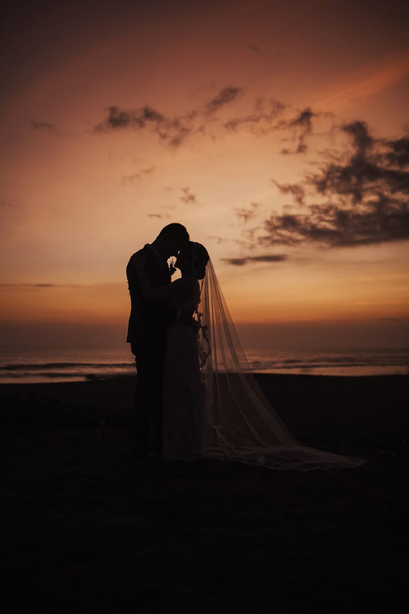
Un procesado diseñado para realizar la calidadez de los momentos compartidos, optimizando lso tonos de piel y la luz ambiental con una estetica vibrante pero natural
Inspirado en la profundidad del cine clásico. Al eliminar el color, resaltamos las texturas, las sombras y la fuerza de la narrativa visual atemporal.
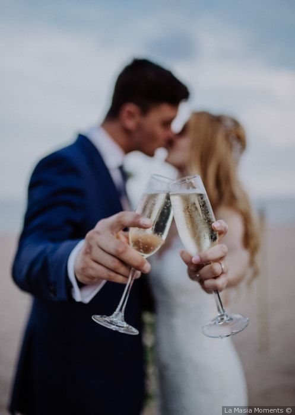
Especializado en captar la magia de la decoración y los pequeños instantes que suele pasar desapercibidos en condiciones de luz compleja.
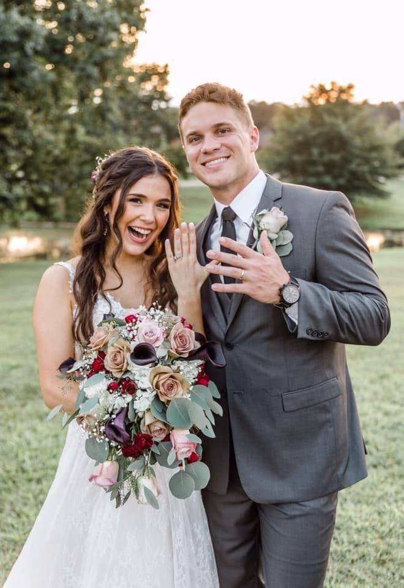
Aprovechando la luz más suave del dia para crear composiciones de en sueños que anvuelven a los sujetos en un aura dorada y cinematografica
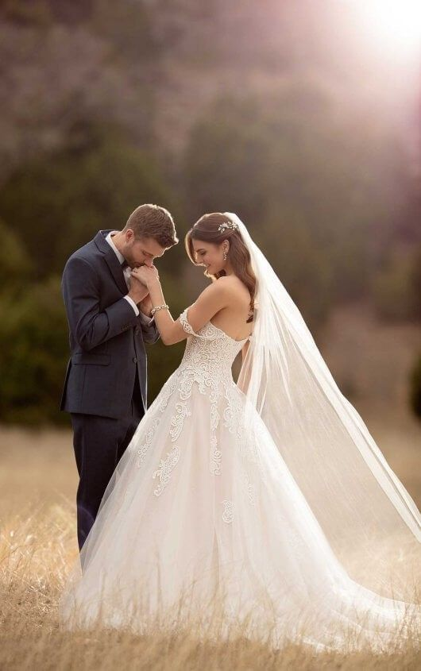
Jugando con las formas y el contraluz para crear imágenes minimalistas donde la composición geometrica cuenta la historia por sí sola.
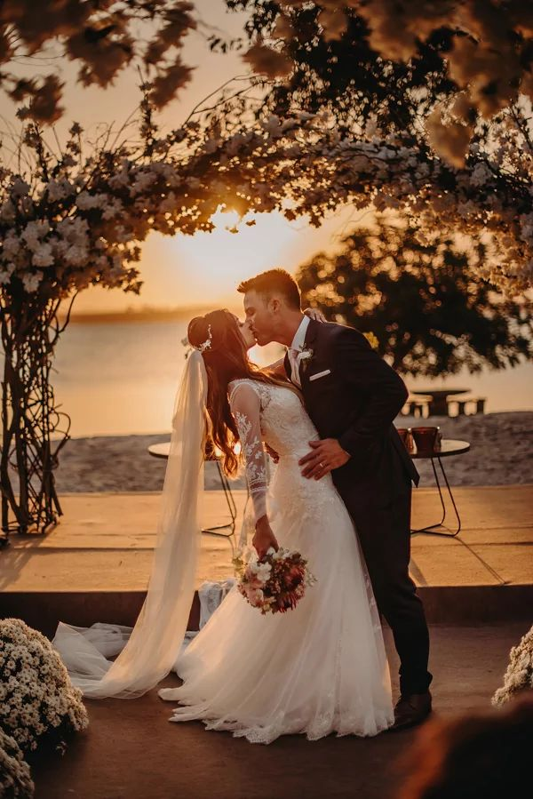
Fotografia documental pura. capturamos la risa espontánea y la lágrimas sinceras sin poses forzadas, manteniendo la autenticidad del evento.
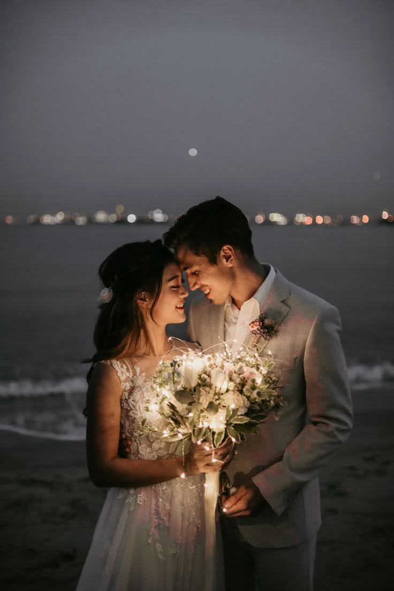
Un enfoque en los materiales y el entorno, ideal para resaltar la delicadez de las telas,las flores y paisajes naturales que rodean la escena.
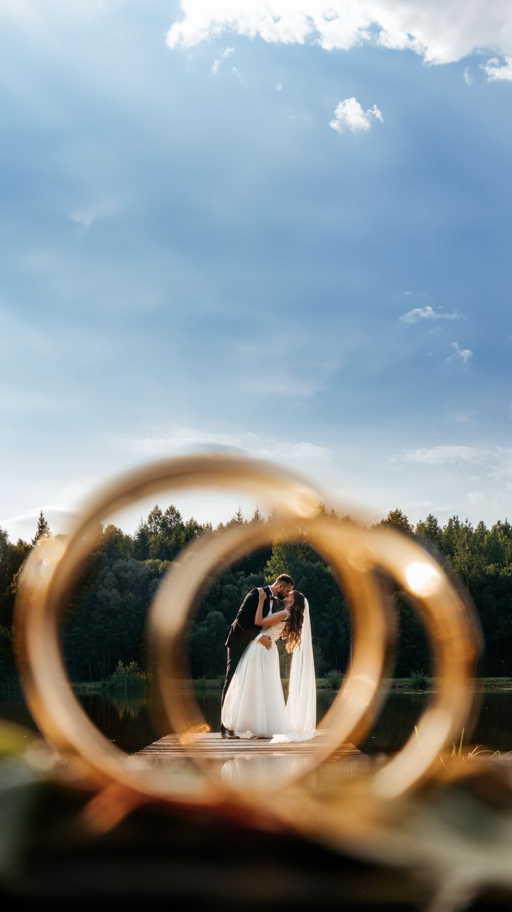
Con un grano sutil y colores desaturados que evocan la nostalgia de la pelicual analógica de los años 70, aportado un toque artistico.
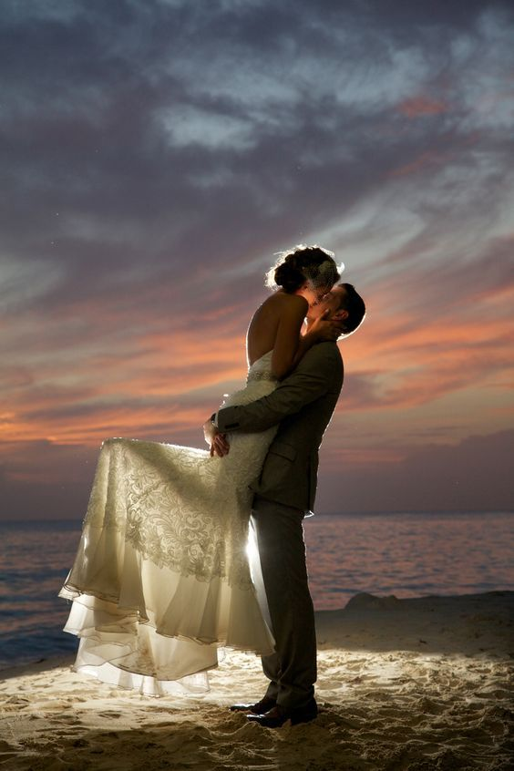
Utilizamos el entorno urbano y estructuras para enmarcar a los protagonistas, fucionando la moda con la estética de la cuidad.
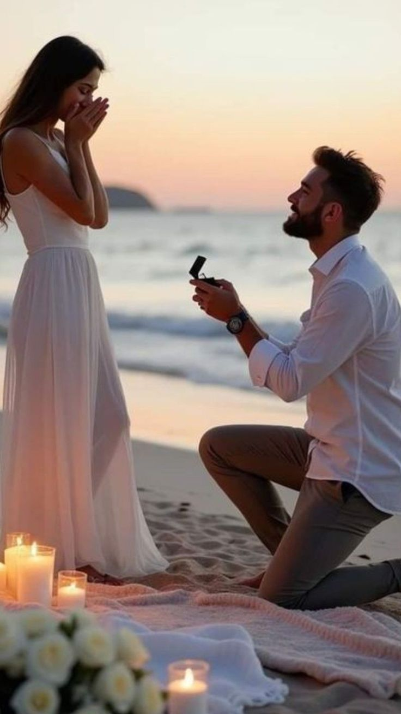
Un estilo delicado que utiliza desenfoque artistico para centrar todo la ateción en el detalle principal, creando una atmósfera de paz y elegancia.
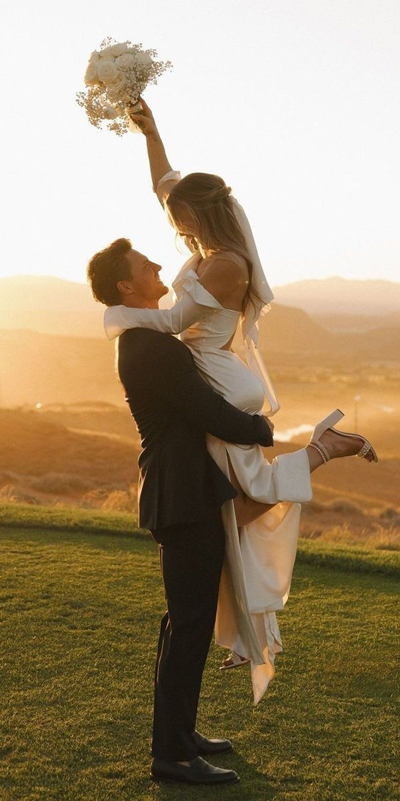
Capturando la transición del dia y la noche con tonos azules profundos y luces artificiales que añaden un toque de misterio y sofisticación
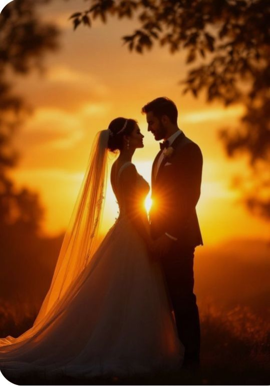
El cierre perfecto para uan historia visual, enfocándose en la despedida y el inicio de un nuevo camino, con una edición limpia y atemporal.